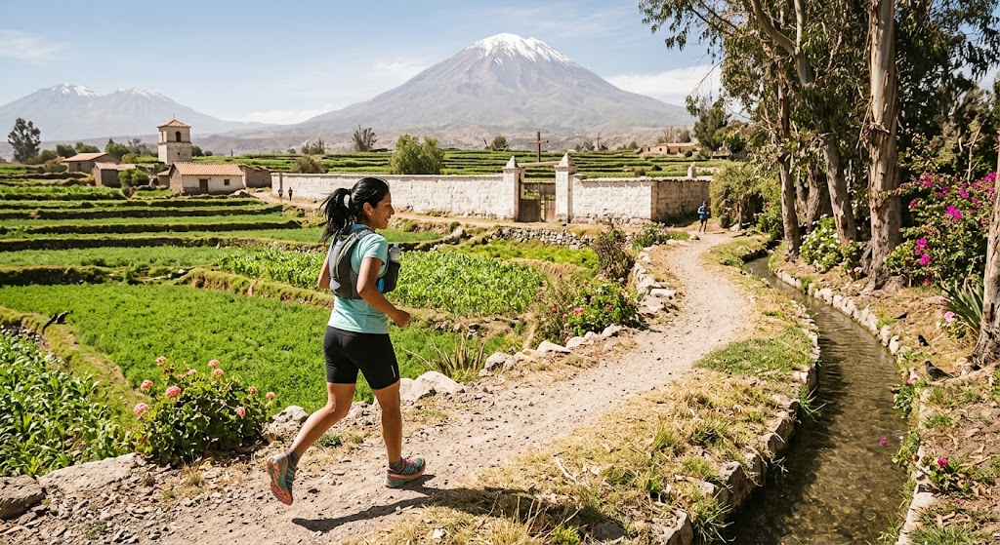
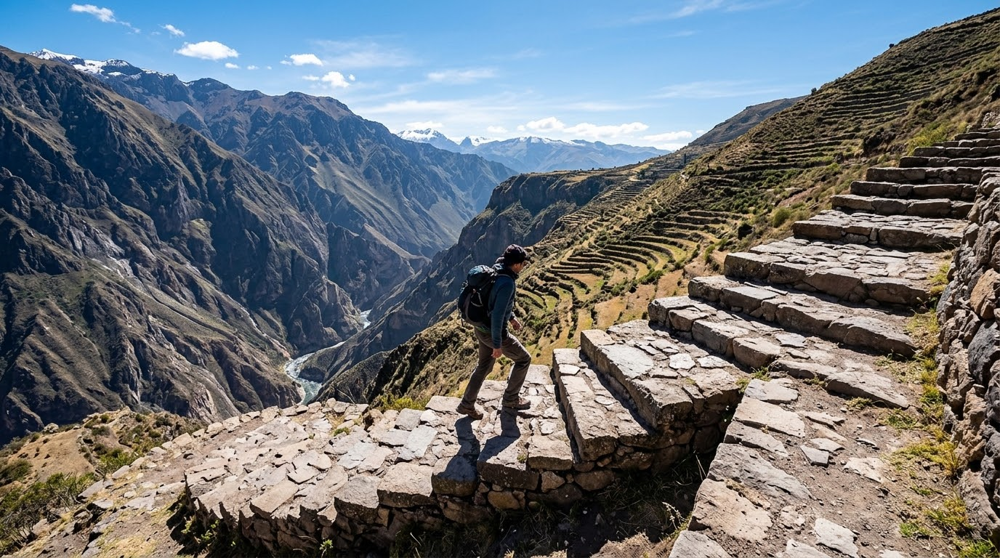
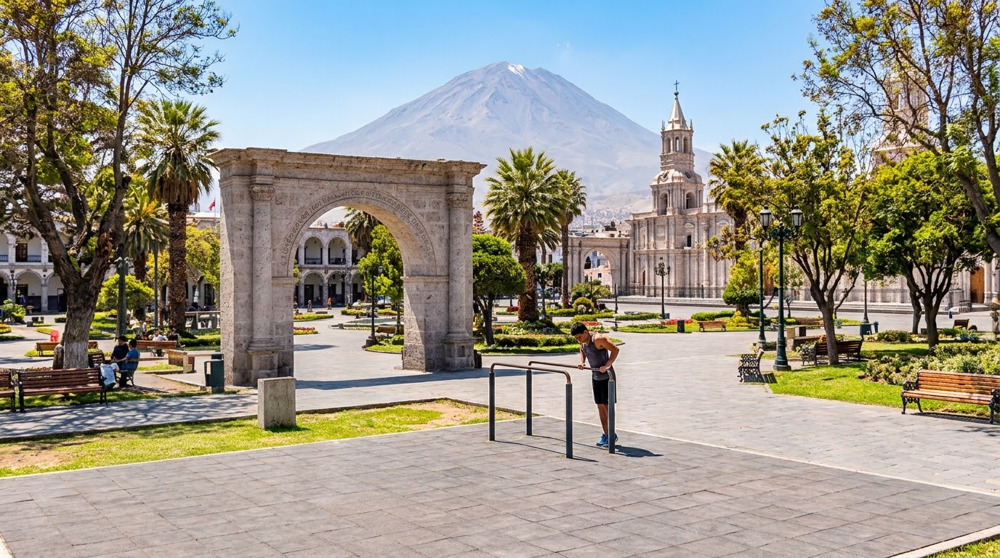
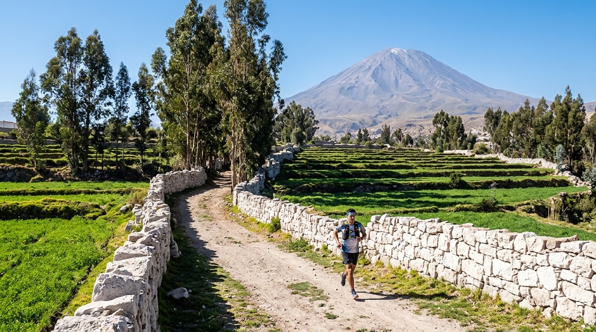
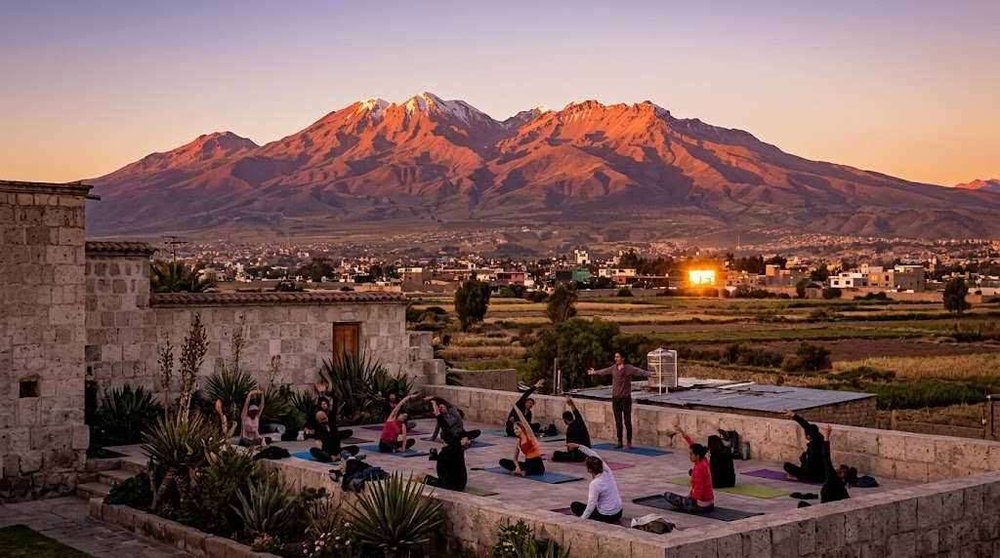
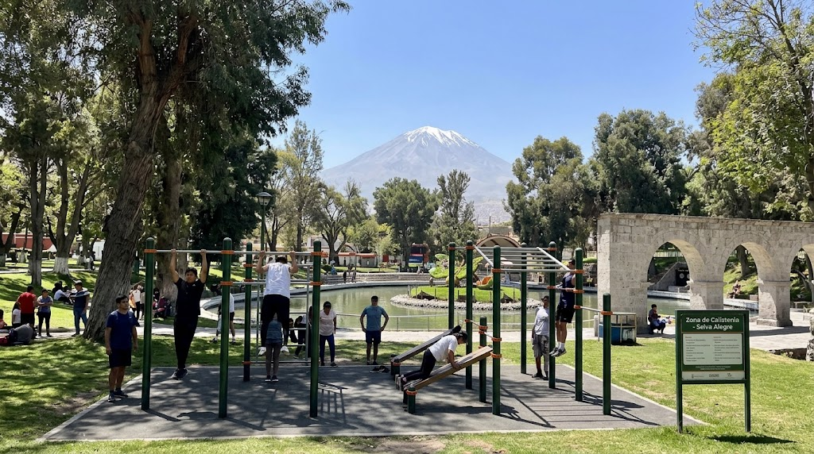
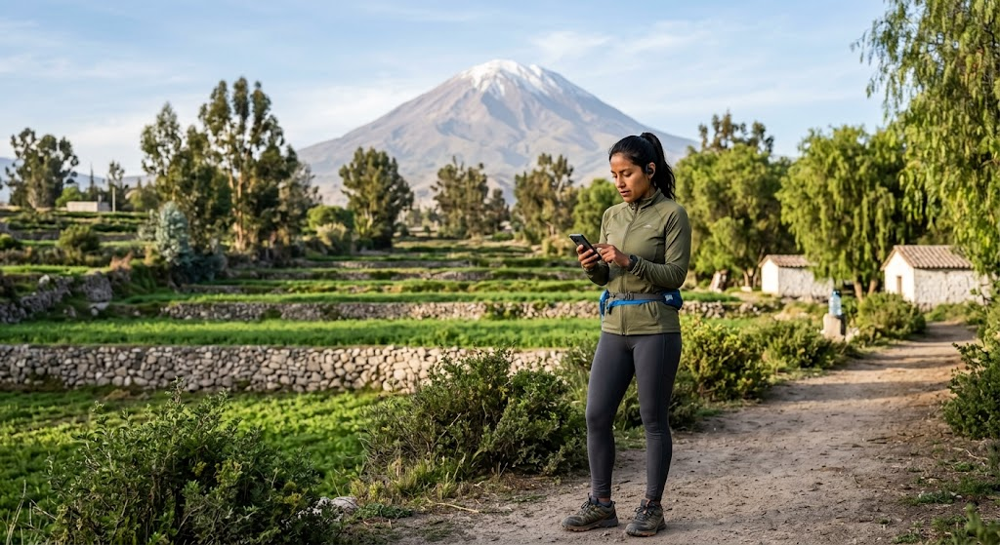
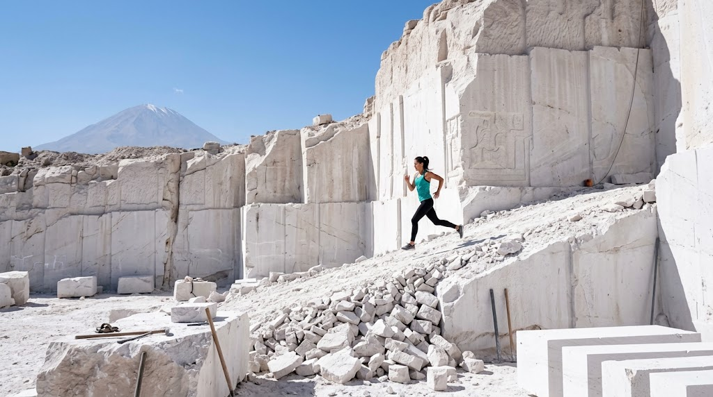
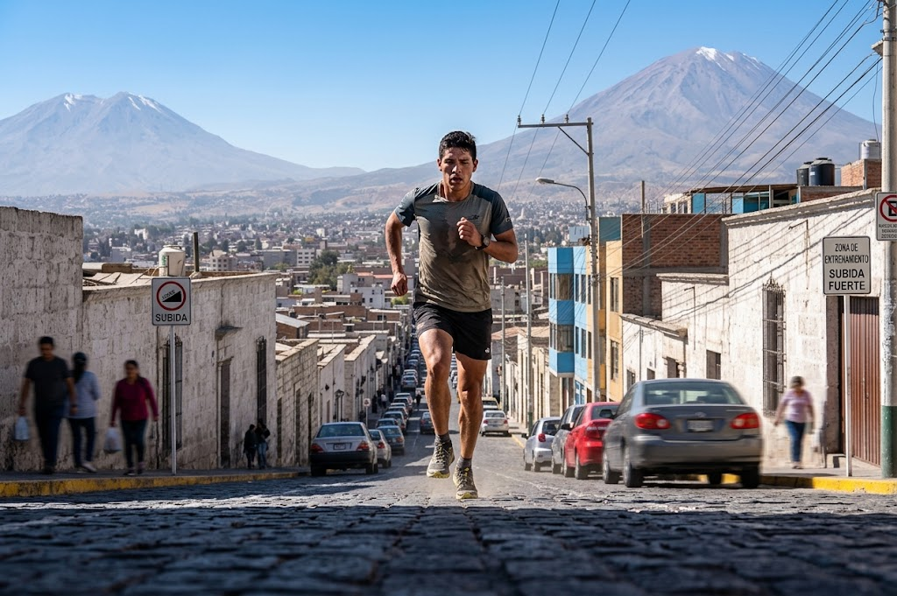
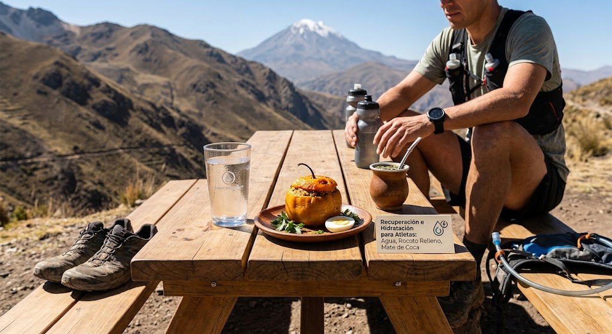

Plan Inicial
Paso introductorio con ejercicios de movilidad articular, estiramientos y activación ligera.
⏱️ 15-20 min/día
⭐ 4.9 / 5
Descubre rutinas de movilidad, fuerza y resistencia diseñadas para realizarse en casa, la campiña o los parques de Arequipa. Aprovecha la energía de la cuna del Misti sin equipos costosos.
Ver Planes DisponiblesSin máquinas
Progresivos
Energía en Altitud
Selecciona la rutina que mejor se adapte a tu nivel y disponibilidad diaria
Paso introductorio con ejercicios de movilidad articular, estiramientos y activación ligera.

Nivel IntermedioUna semana enfocado en activar el metabolismo y consolidar el hábito del ejercicio diario.

Nivel AvanzadoPrograma de 3 semanas estructurado para aumentar progresivamente la resistencia y fuerza.

Nivel IntensoRutinas exigentes de calistenia e intervalos intensos para maximizar el rendimiento físico.
Diseñado para potenciar tu salud respetando tu ritmo de vida

Flexibilidad total: ejercítate desde casa, el parque Selva Alegre o la campiña sin máquinas.

Metodología escalonada que cuida tus articulaciones y respeta tus tiempos de adaptación.

Contenido estructurado en movilidad, fuerza, resistencia y recomendaciones de hidratación.

Monitoreo orientado al bienestar, la constancia y hábitos saludables duraderos.
Cuidar tu salud es la prioridad antes de iniciar cualquier reto deportivo
Bebe suficiente agua antes, durante y después del ejercicio para contrarrestar el clima seco de Arequipa.
Usa bloqueador y gorra al ejercitarte al aire libre bajo la radiación solar arequipeña.
Si tienes condiciones médicas previas, acude a un especialista antes de iniciar rutinas intensas.
Capturas de actividad física al aire libre en la Ciudad Blanca


